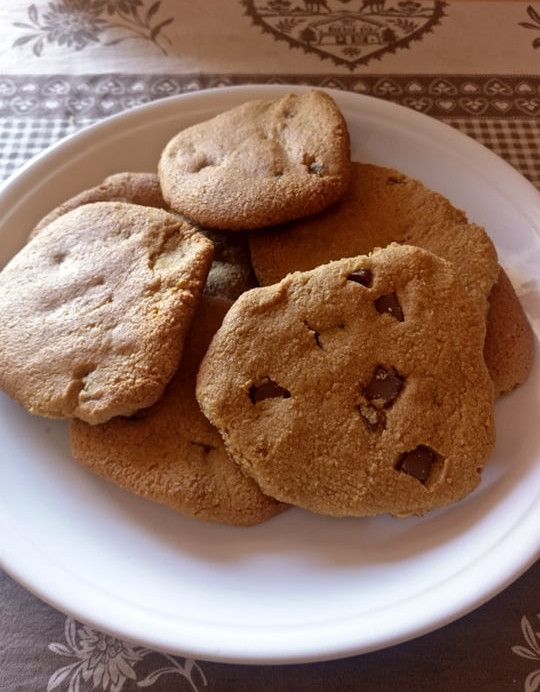

Peanut Butter Cookies

Versatile, fun, quick and easy to make!
This cookie is a close relative of the curabié, that little Turkish pIf you want to make them with homemade peanut
butter, of course you can and it comes out exactly the same. (like those little chocolate chips that melt
a bit in the oven and never go back to solid solid… SO Yummy!).
If you want to make them with homemade peanut butter, of course you can and it comes out exactly the same.
Ingredients:
- 1 cup of flour: it can be whole wheat, rice or almond flour or oatmeal.
- 1 cup of peanut butter or tahini (sesame paste, available in natural and gourmet stores). Both can be made homemade or
replaced with homemade paste of any other dried fruit: almonds, cashews, etc.
- ½ cup of honey (or agave, or sweetener of your choice)
- 1 egg
- 1 teaspoon of baking soda
- ½ cup of chopped chocolate
- pinch of salt
Optional: 1 tablespoon vanilla, 1 teaspoon cinnamon, orange zest, etc.